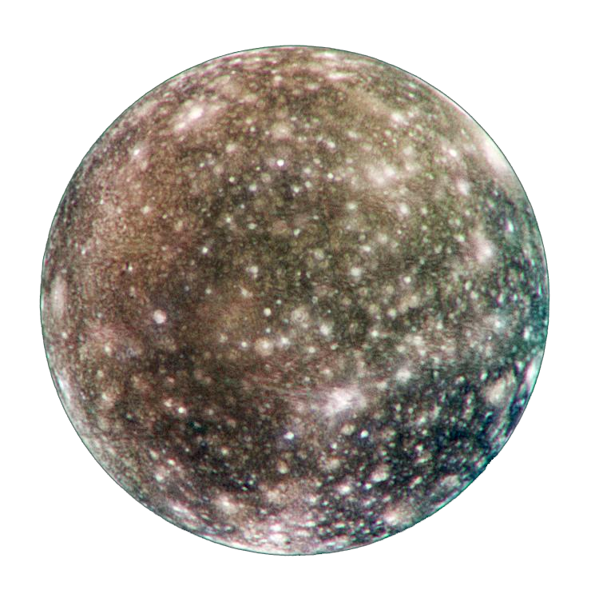
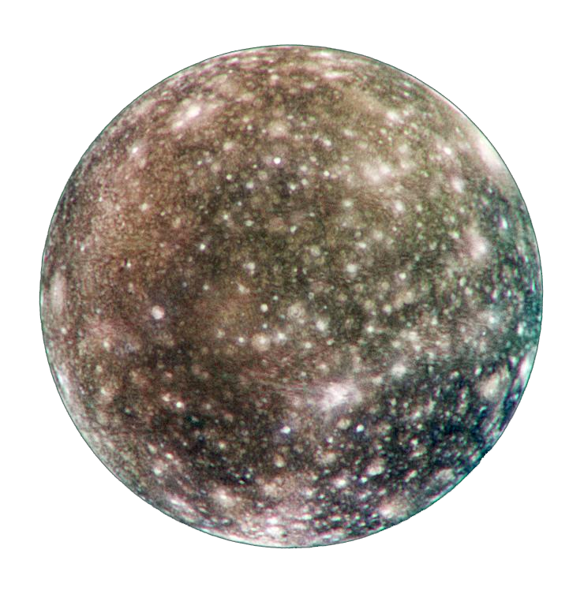

Jupiter
Há 409 anos, no dia 7 de janeiro, Galileu Galilei descobria quatro satélites de Júpiter - Io, Europa, Ganímedes e Calisto. Esses são os primeiros do que viriam a ser 67 satélites de que se tem notícia do planeta. Em um primeiro momento, o astrônomo italiano pensou ter visto três estrelas em torno de Júpiter. Após semanas de avaliação, um quarto corpo apareceu e a partir disso ele sugeriu a existência de quatro satélites na órbita do planeta. Com isso, esses corpos ganharam o nome de Luas de Galileu. Galileu criou um sistema de nomenclatura dos satélites que utilizava números romanos. Dessa forma, as luas eram chamadas de Júpiter I, Júpiter II, Júpiter III e Júpiter IV.
Europe
Já a Europa, com 3122 quilômetros de diâmetro e 4.8×1022 quilos de massa, é a menor entre as luas galileanas. Sua superfície é congelada e composta por materiais mais escuros, dando aos astrônomos a impressão de que a crosta foi separada e depois preenchida. Acredita-se que abaixo do gelo existam oceanos de água líquida. Assim como a Terra, o satélite possui um núcleo composto por ferro e níquel que, por sua vez, é coberto por uma camada rochosa.
Calisto
Calisto é a lua galileana mais distante de Júpiter e tem 4,5 bilhões de anos, aproximadamente a mesma idade do planeta. Por conta disso, estima-se que a superfície do satélite, que é cheia de crateras, seja uma das mais antigas do Sistema Solar. Calisto é composto por gelo e rocha e, segundo a NASA, seu núcleo provavelmente contém silicato (silício e oxigênio). Também é possível que o satélite tenha água líquida abaixo de sua superfície.
Io
Io possui um diâmetro de 3643 quilômetros e uma massa de 8.93×1022 quilos. O satélite é o que fica mais próximo ao planeta e possui uma atividade vulcânica que atinge temperaturas por volta dos 1700 ºC, bem maior do que as da Terra. Acredita-se que essa atividade seja relacionada às interações gravitacionais da lua com Júpiter e até mesmo Europa e Ganímedes. A superfície de Io conta com uma mistura de cores quentes, resultantes do enxofre e do dióxido de enxofre presentes no satélite e pelas temperaturas liberadas por sua atividade vulcânica.
Ganímedes
Ganímedes é a principal lua de Júpiter e é o maior satélite do Sistema Solar. Com 5262 quilômetros de diâmetro, o satélite chega a ser maior do que o planeta Mercúrio, que possui 4879 quilômetros na mesma medida. A superfície de Ganímedes é parecida com a da Terra: ela possui terra e água salgada - inclusive mais que o nosso planeta. Usando o telescópio Hubble, cientistas da NASA estudaram melhor a superfície do satélite, que possui um oceano com uma espessura de 100 quilômetros.